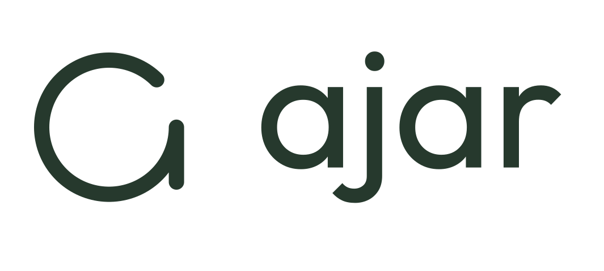
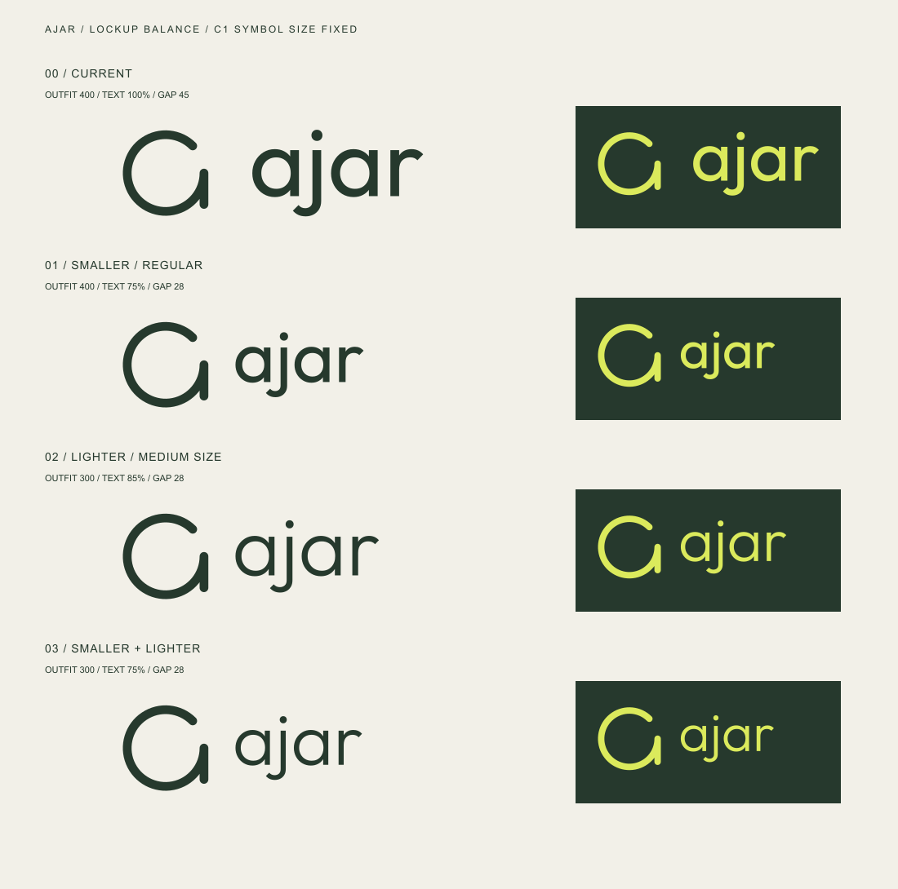

Regular 400 · 기존 크기
이 조합 SVG ↓C1의 크기는 유지하고, 전체 이름 ajar의 글자 크기와 굵기를 비교했습니다. 네 글자 모두 같은 Outfit 서체를 사용하며 심볼은 독립된 형태로 둡니다.
작고 얇게.
Outfit Light 300
기존 글자 크기의 75%
글자의 점과 j 아래 부분까지 포함한 높이를 심볼보다 작게 두었습니다. 글자 무게를 낮추고 두 요소 사이 간격도 줄여, 하나의 조합으로 읽히도록 했습니다.
03의 비례를 BI v1.3 기본 조합에 반영했습니다. 최소 사용 크기를 지키고 더 작은 영역에서는 심볼 단독을 사용합니다.
75%심볼 대비 전체 글자 높이
32%심볼 높이 대비 요소 간격
300추천 조합의 글자 굵기

브랜드 정의는 ‘열려 있는 상태 자체’입니다. C1 심볼과 컬러는 유지하며, 03을 현재 기본 조합으로 사용합니다. 이 페이지는 이전 조합과의 비교 기록입니다.